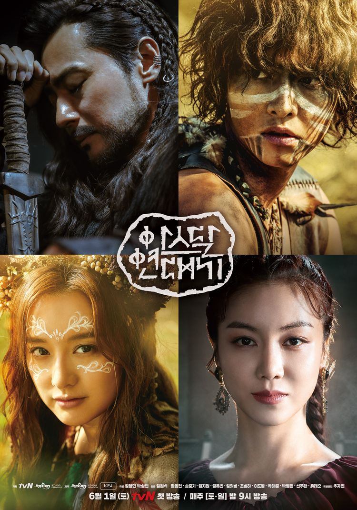

가상의 대륙, 아스! 그곳에 최초의 도시, 아스달이 생겨났고, 도시가 요동치며, 최초의 국가가 만들어지고 있다!
그 중심에 선 각자 다른 욕망을 가진 인물들! 그들은 각각 어떠한 국가를 만들려하는가! 또한! 결국! 누가! 그곳을 차지하게 되는가!
문명의 시작! 영웅들의 뜨거운 이야기!
아직 국가와 왕을 만나지 못했던 멀고 먼 옛날 아스 대륙에 세워진 최초의 도시.. 최초의 국가.. 그리고 최초의 왕..! 시원 설화인 단군설화를 재해석하고 판타지적인 설정을 첨가하여, 가상의 땅 아스에서 처음으로 '나라'라는 것이 만들어지는 과정을 각기 다른 모습의 영웅들을 통해 그리려 한다.
사람의 이야기이자 통합의 이야기!
네 명의 영웅, 세 개의 종(種), 두 개의 사랑, 하나의 전설! 이 드라마에는 사람족과 사람의 아종(亞種)으로서 사람과 모습은 흡사하지만 많은 것이 다른 뇌안탈이 등장한다. 자유의 땅, 달의 평원의 뇌안탈과 탐욕의 땅, 아스달의 사람족. 이들은 신체적인 특징이 다르지만, 더욱 다른 것은 그들의 생각이다. 사람과 뇌안탈간의 대립과 화합을 통해 진정한 ‘통합’을 그리려 한다.
원형적 사랑의 이야기!
이(利)로 맺어졌으나, 누구보다 폭발적이고 원초적인 사랑. 지고지순했으나, 권력의 대결에서 결국 또 다른 선택을 하게 될 사랑. 생물학적으로 종(種)이 다른 불가능해 보이는 사랑. 여러 가지 모양의 사랑을 하는 인물들을 통하여, 보다 근원적인 인류 원형의 ‘사랑’을 보여주려 한다.
